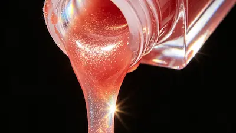

Блески для губ: как выбрать, чтобы получить нужный эффект
Блеск для губ — универсальное средство для макияжа, которое придаёт губам сияние, визуальный объём и ухоженный вид. Современные формулы могут быть прозрачными, оттеночными, увлажняющими или создавать эффект более объёмных губ.
Если вы хотите визуально сделать губы более полными, обратите внимание на блески с интенсивным глянцевым финишем или формулы с эффектом plumping. Для естественного результата подойдут прозрачные и нюдовые оттенки, а увлажняющие текстуры помогут сделать губы визуально более гладкими.
При выборе блеска важно учитывать не только оттенок, но и текстуру, финиш, стойкость и желаемый результат — естественное сияние, интенсивный глянец, увлажнение или визуальный эффект объёма.
Подобрать специалистаНе уверены, какое средство выбрать?
Если сложно подобрать уходовую или декоративную косметику самостоятельно, вы можете получить персональную консультацию специалиста.
- ✔ Подбор ухода по типу кожи
- ✔ Подбор декоративной косметики
- ✔ Индивидуальные рекомендации
Типы блесков
Прозрачные, цветные, шиммерные, увлажняющие и увеличивающие губы.
Блеск для объёма губ
Как выбрать блеск для визуально более полных губ и какие формулы создают эффект объёма.
Текстуры блесков
Чем отличаются лёгкие, глянцевые и кремовые формулы.
Оттенки блесков
Как подобрать цвет блеска для губ под тон кожи и макияж.
Как наносить блеск
Техника нанесения для аккуратного и сияющего макияжа губ.
Карандаш и блеск
Когда использовать контурный карандаш вместе с блеском для губ.
Подготовка губ
Скраб, бальзам и уход перед нанесением блеска.
Стойкие блески
Как выбрать блеск для губ, который держится дольше.
Лучшие блески
Популярные блески для губ разных брендов и их особенности.
Состав блесков
Основные компоненты: масла, полимеры, пигменты и ухаживающие ингредиенты.
Как смывать блеск
Правильное удаление блеска и уход за губами после макияжа.
Блеск для губ на каждый день
Лёгкий акцент на губах, сияющий финиш и ощущение ухоженного образа. Посмотрите, как выглядит блеск на губах при нанесении.



Виды блесков для губ: какой выбрать?
Блески для губ отличаются не только цветом, но и финишем, текстурой и эффектом после нанесения. Одни средства дают лёгкое естественное сияние, другие создают насыщенный глянцевый эффект, увлажняют губы или визуально делают их более объёмными.
Если главная цель — естественный макияж, обычно достаточно прозрачного или нюдового блеска. Для более заметного сияния подойдут глянцевые и шиммерные формулы, а для визуального увеличения губ можно рассмотреть блески с эффектом plumping.


Текстуры блесков для губ: чем они отличаются?
Текстура влияет на то, как блеск ощущается на губах, насколько равномерно распределяется и как выглядит после нанесения. При выборе важно учитывать не только интенсивность сияния, но и комфорт, склонность формулы к растеканию и состояние кожи губ.
Для сухих губ особенно важен комфорт и наличие смягчающих компонентов. Если хочется получить максимально выраженный визуальный эффект объёма, стоит обратить внимание на гладкие глянцевые текстуры, которые хорошо отражают свет.


Как выбрать оттенок блеска для губ?
Оттенок блеска влияет на общий вид макияжа, но благодаря полупрозрачной текстуре результат часто зависит и от естественного цвета губ. Поэтому один и тот же блеск может выглядеть немного по-разному на разных губах.
При выборе оттенка стоит учитывать подтон кожи, естественный цвет губ и общий макияж. Для максимально универсального варианта подойдут прозрачные, нюдовые и мягкие розовые оттенки. Если же хочется сделать губы визуально более объёмными, важен не только цвет, но и сочетание оттенка с глянцевым финишем и техникой нанесения.
Как правильно наносить блеск для губ
Чтобы блеск выглядел аккуратно и равномерно, важно учитывать не только количество продукта, но и состояние губ. Правильная подготовка помогает избежать скатывания, подчёркивания сухости и чрезмерного растекания блеска за контур.
- Подготовьте губы: при необходимости мягко удалите сухие участки и нанесите увлажняющий бальзам. Перед блеском уберите излишки ухода салфеткой.
- Определите контур: для более аккуратного макияжа используйте карандаш, особенно если блеск имеет жидкую или очень глянцевую текстуру.
- Нанесите небольшое количество: начните с тонкого слоя от центра губ и распределите продукт к уголкам. При необходимости добавьте немного средства.
- Не перегружайте уголки: именно в этой зоне избыток блеска чаще всего выходит за естественный контур.
- Добавьте сияние в центр: небольшое количество блеска в центре верхней и нижней губы создаёт дополнительный эффект света и визуального объёма.
Для естественного дневного макияжа достаточно тонкого слоя. Если нужен более выразительный эффект, блеск можно наслаивать постепенно, оценивая результат после каждого нанесения.


Как сочетать карандаш и блеск для губ
Карандаш для губ помогает сделать контур более чётким и создать основу для блеска. Такой способ особенно удобен, если хочется визуально подчеркнуть форму губ, добавить оттенок или уменьшить риск растекания глянцевой текстуры.
- Для чёткого контура: проведите линию по естественному контуру губ, уделяя особое внимание уголкам.
- Для визуального объёма: можно немного сместить линию за естественный контур в наиболее выступающих участках губ, не выходя далеко за их естественную форму.
- Как основу: нанесите карандаш не только по контуру, но и тонким слоем на поверхность губ. Затем добавьте блеск сверху.
- Для более стойкого результата: сочетание карандаша и блеска помогает сохранить оттенок даже после того, как часть глянцевого покрытия исчезнет.
Для естественного результата выбирайте карандаш близкого к натуральному цвету губ или оттенку блеска. Если нужен более выразительный макияж, можно использовать карандаш немного темнее, но переход между контурами должен оставаться мягким.
Нужен профессиональный макияж?
Если вы хотите подобрать идеальный тон или сделать профессиональный макияж, обратитесь к опытному визажисту.
Посмотреть услуги визажистов


Как подготовить губы перед нанесением блеска
Подготовка губ помогает получить более ровное и аккуратное покрытие. Особенно это важно при использовании прозрачных и глянцевых формул, которые могут подчёркивать сухость и шелушение.
- Удалите сухие участки: если на губах есть шелушение, используйте мягкое средство для отшелушивания без интенсивного трения. Делать это перед каждым нанесением блеска не требуется.
- Увлажните губы: нанесите тонкий слой бальзама и дайте ему впитаться. Перед нанесением блеска уберите излишки средства.
- Оцените состояние губ: если кожа сильно сухая или раздражённая, лучше сначала сосредоточиться на уходе, а уже затем наносить декоративную косметику.
- Используйте базу при необходимости: специальная база для губ может помочь выровнять поверхность и создать более комфортную основу под макияж.
Для ежедневного ухода достаточно регулярно использовать бальзам или средство для губ. Если вам важен дополнительный комфорт, можно выбирать формулы блесков с ухаживающими компонентами, например маслами или витамином Е.
На что обратить внимание в составе блеска для губ
Состав блеска влияет на его текстуру, комфорт, степень сияния и особенности нанесения. В зависимости от формулы производители используют масла, воски, плёнкообразующие компоненты, пигменты и ингредиенты для ухода за губами.
- Масла и эмоленты: помогают смягчать губы и делают текстуру более комфортной. В составе могут встречаться масла жожоба, кокоса, арганы и другие смягчающие компоненты.
- Воски: помогают формировать консистенцию продукта и влияют на его распределение и сцепление с поверхностью губ.
- Пигменты: определяют оттенок и интенсивность цвета. В зависимости от формулы покрытие может быть почти прозрачным или более насыщенным.
- Плёнкообразующие компоненты и полимеры: помогают формуле равномерно распределяться и могут влиять на её стойкость и ощущение на губах.
- Ухаживающие компоненты: в некоторых формулах используются витамин Е, гиалуроновая кислота и растительные компоненты для дополнительного комфорта.
При выборе блеска стоит смотреть не только на отдельный ингредиент, но и на всю формулу. Если губы склонны к сухости, обращайте внимание прежде всего на комфорт и наличие смягчающих компонентов, а не только на обещания производителя.


Как выбрать стойкий блеск для губ
Стойкость блеска зависит от его формулы, количества нанесённого продукта и условий использования. В отличие от стойкой матовой помады, классический блеск обычно требует обновления после еды и напитков.
- Плёнкообразующие формулы: некоторые компоненты помогают продукту лучше сцепляться с поверхностью губ и дольше сохранять покрытие.
- Блески с оттенком: тинты и пигментированные формулы могут оставлять цвет на губах даже после того, как глянцевый слой становится менее заметным.
- Тонкий слой: слишком большое количество продукта не обязательно повышает стойкость и может увеличить вероятность растекания.
- Карандаш в качестве основы: контурный карандаш или средство для губ может помочь сохранить оттенок и сделать макияж более аккуратным.
- Условия использования: контакт с едой, напитками, волосами и постоянное трение естественным образом сокращают время сохранения глянцевого покрытия.
Если для вас важна именно стойкость, при выборе обращайте внимание на описание формулы и отзывы о реальном поведении продукта. Для повседневного макияжа часто удобнее выбрать баланс между стойкостью, комфортом и увлажнением, а не стремиться к максимальной фиксации.
Какой блеск выбрать для визуально более объёмных губ?
Если вы хотите визуально сделать губы более полными, правильно подобранный блеск действительно может помочь создать такой эффект. Интенсивный глянцевый финиш отражает свет и подчёркивает форму губ, а специальные формулы с эффектом plumping предназначены для более выраженного визуального объёма.
Для естественного результата подойдут прозрачные, розовые или нюдовые блески с выраженным сиянием. Если нужен более заметный эффект, можно обратить внимание на блески для увеличения объёма губ — plumping gloss. Такие средства могут создавать временное ощущение наполненности и визуально подчёркивать контур губ.
На что обратить внимание при выборе блеска для объёма?
Для дополнительного эффекта объёма можно использовать блеск вместе с контурным карандашом: слегка подчеркнуть естественный контур губ, а затем нанести блеск в центре верхней и нижней губы. Такой приём создаёт дополнительный световой акцент и помогает визуально сделать губы полнее.
Если вы выбираете конкретное средство, стоит сравнить не только обещанный эффект объёма, но и текстуру, оттенок, увлажняющие свойства и комфорт при нанесении. Ниже мы собрали подборку популярных блесков, чтобы было проще сравнить их характеристики.
Лучшие блески для губ
Подборка популярных блесков для губ — от прозрачных сияющих формул до увлажняющих и оттеночных вариантов. Эти продукты часто рекомендуют визажисты и их легко найти в интернет-магазинах.
Как мы выбирали продукты:
Мы учитывали финиш, текстуру, комфорт при нанесении, визуальный
эффект на губах, увлажняющие свойства, стойкость и соотношение
характеристик продукта и его цены.
Независимый обзор. Продукты не спонсируются.
*Данный материал является независимым редакционным обзором и не
спонсируется производителем или продавцом продукта.
*Все названия брендов, товарные знаки и наименования продукции
принадлежат их законным правообладателям и используются
исключительно в информационных и редакционных целях.
*Представленная информация отражает мнение автора и не является
официальной рекомендацией производителя.
*Ссылки приведены в ознакомительных целях. При наличии
партнёрства здесь может быть размещена прямая ссылка на
продукт.

Советы визажистов: как сделать макияж губ с блеском аккуратным и объёмным
Главный принцип — учитывать текстуру и желаемый результат. Для естественного макияжа достаточно лёгкого слоя, а для более выразительного эффекта можно добавить блеск в центр губ.
Как правильно удалить блеск для губ
Даже лёгкий блеск для губ важно полностью удалять в конце дня. Остатки пигментов, масел и других компонентов могут смешиваться с кожным салом и частицами косметики, поэтому губы лучше очищать мягко, без интенсивного трения.
- Мицеллярная вода: подходит для лёгких и полупрозрачных формул. Нанесите средство на ватный диск и аккуратно удалите блеск.
- Средство для снятия макияжа: удобно использовать для плотных, пигментированных или более стойких формул.
- Гидрофильное масло: помогает растворить маслянистые и плотные текстуры, после чего остатки можно удалить мягким средством.
- Мягкое очищение: не следует сильно тереть губы, особенно если кожа склонна к сухости или чувствительности.
После очищения можно нанести бальзам или масло для губ. Регулярный уход помогает поддерживать кожу губ мягкой и делает последующее нанесение декоративной косметики более комфортным.

Частые ошибки при использовании блеска для губ
Избегая этих ошибок, можно сделать макияж губ более аккуратным, комфортным и естественным, независимо от выбранной текстуры или оттенка блеска.
Часто задаваемые вопросы о блеске для губ
Как выбрать блеск для губ?
При выборе блеска важно учитывать текстуру, оттенок и эффект. Для повседневного макияжа хорошо подходят прозрачные или нюдовые блески, а для более яркого образа — оттеночные или блески с шиммером.
Можно ли наносить блеск поверх помады?
Да, блеск часто наносят поверх помады. Это помогает создать эффект сияния и сделать губы визуально более объёмными.
Как сделать губы более объёмными с помощью блеска?
Нанесите немного блеска в центр верхней и нижней губы. Глянцевый эффект отражает свет и создаёт иллюзию более объёмных губ.
Подходит ли блеск для сухих губ?
Многие современные блески содержат увлажняющие компоненты — масла, витамин Е или гиалуроновую кислоту, которые помогают смягчать губы.
Как сделать блеск более стойким?
Для большей стойкости можно сначала использовать карандаш для губ или лёгкую помаду, а затем нанести тонкий слой блеска сверху.